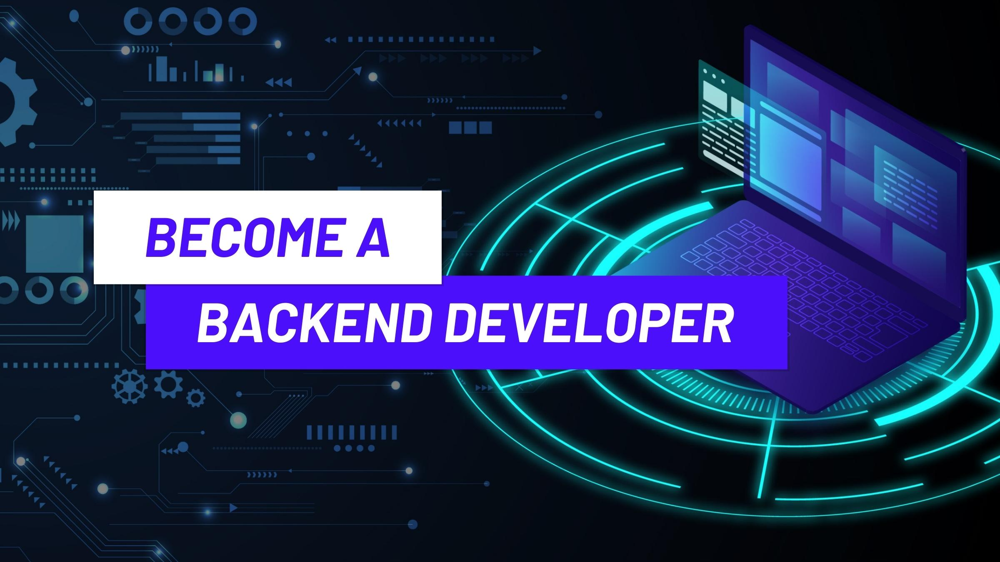
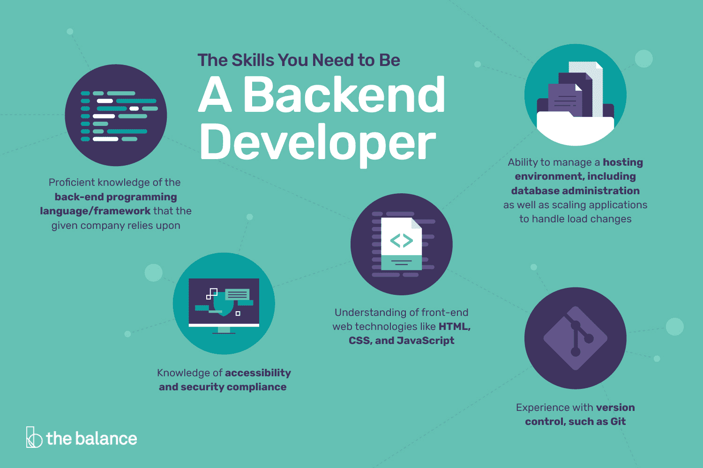

Back-end developers are the experts who build and maintain the mechanisms that process data and perform actions on websites. Unlike front-end developers, who control everything you can see on a website, back-end developers are involved in data storage, security, and other server-side functions that you cannot see.
Back-end development means working on server-side software, which focuses on everything you can’t see on a website. Back-end developers ensure the website performs correctly, focusing on databases, back-end logic, application programming interface (APIs), architecture, and servers. They use code that helps browsers communicate with databases, store, understand, and delete data. On a team, back-end developers collaborate with front-end developers, product managers, principal architects, and website testers to build the structure of a website or mobile app. Back-end developers must be familiar with many kinds of tools and frameworks, including languages such as Python, Java, and Ruby. They make sure the back-end performs quickly and responsively to front-end user requests.
Back-end developer vs. back-end engineer Back-end developers and engineers have similar technical skills, but different responsibilities. A back-end developer is like a teacher, whereas a back-end engineer is like a school principal who creates the big-picture strategy. Back-end developers tend to focus on smaller parts of the whole, such as applications and programs, working with teams to prove their design methods are viable.
Back-end developers are required to have technical expertise, analytical thinking, and excellent collaboration skills. As a back-end web developer, you should be able to work independently to design the web infrastructure..
Set up a Node and Express environment so you can develop web applications on your local machine, and learn to handle HTTP Requests & Routes. Update and modify website elements dynamically using asynchronously retrieved data.
There are many paths you can take to become a web developer. Whether you are a recent graduate or hoping to switch careers, it is important to assess what transferable skills you already have and consider building the new skills needed to pursue a back-end developer role.
Comments